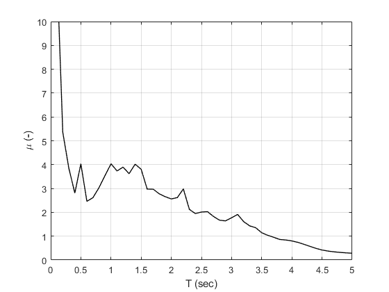
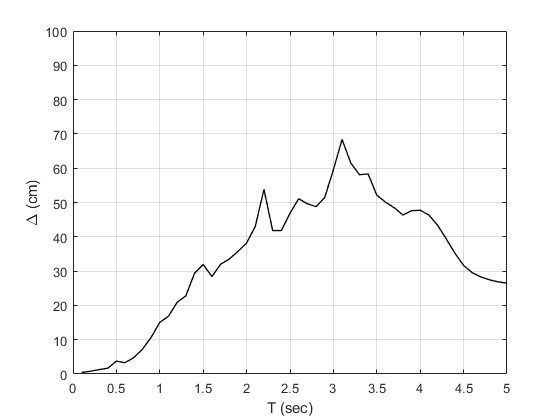

verification Constant strength response spectrum
Contents
Reference
Tena-Colunga, A. (1999). Simplified seismic evaluation of existing structures, 8th Canadian Conference on Earthquake Engineering, Vancouver, Canada, 317-322.
Description
In the above reference, a new type of spectrum is proposed, the constant strength response spectrum (CSRS). A displacement ductility demand spectrum (DDDS) relates peak displacement ductility demands (and other important response quantities, i.e., displacements) with structural periods of nonlinear elastic-perfectly-plastic hysteretic SDOF systems with given yield strengths. Figure 1 of the above reference is verified in this example. The SDOF system has a yield strength ratio equal to V/W=0.15 and the acceleration time history of the SCT-EW component recorded during the 1985 Michoacan earthquake is considered.
Load earthquake data
Earthquake acceleration time history of the 1985 Michoacan earthquake will be used (SCT-EW component). The txt file contains the following columns: time, acceleration N-S, acceleration E-W, acceleration V
fid=fopen('sct190985.txt','r'); text=textscan(fid,'%f %f %f %f'); fclose(fid); t=text{1,1}; dt=t(2)-t(1); xgtt=9.81*text{1,3};
Calculate constant strength response spectra of earthquake motion
Switch
sw='csrs';
Eigenperiods
T=linspace(0.1,5,50);
Critical damping ratio
ksi=0.05;
Strength ratio
fyR=0.15;
Post-yield stiffness factor
pysf=0.001;
Apply OpenSeismoMatlab
S1=OpenSeismoMatlab(dt,xgtt,sw,T,ksi,fyR,pysf);
Plot the ductility demand response spectra
Initialize figure
figure() % Plot the constant strength ductility demand response spectra plot(S1.Period,S1.CSSmu, 'k-', 'LineWidth', 1) % Finalize figure grid on xlabel('T (sec)') ylabel('\mu (-)') xlim([0,5]) ylim([0,10]) drawnow; pause(0.1)
Plot the displacement demand response spectra
Initialize figure
figure() % Plot the constant strength displacement demand response spectra plot(S1.Period,100*S1.CSSd, 'k-', 'LineWidth', 1) % Finalize figure grid on xlabel('T (sec)') ylabel('\Delta (cm)') xlim([0,5]) ylim([0,100]) drawnow; pause(0.1)
Copyright
Copyright (c) 2018-2023 by George Papazafeiropoulos
- Major, Infrastructure Engineer, Hellenic Air Force
- Civil Engineer, M.Sc., Ph.D.
- Email: gpapazafeiropoulos@yahoo.gr